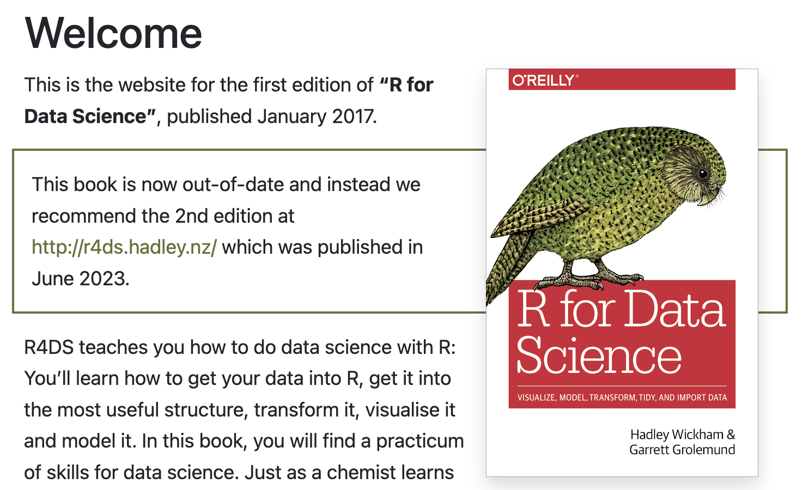
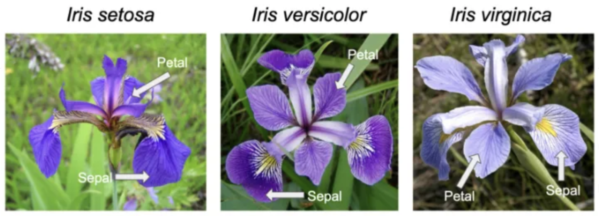

Chapter 3 Introduction to R: Part 2

3.2 Packages
- A package is a collection of previously programmed functions and data sets, often including functions for specific tasks.
- Some packages come with the base installation of R.
- There are thousands of user-contributed packages that you must manually download and install.
- To see which packages you have, click View -> Show Package.
- To see all available packages: https://cran.r-project.org/web/packages/
- Some packages can be very handy when working with psychological data.
- The
psychpackage is a general-purpose toolbox for analyzing psychological data. - The
havenpackage can be used to import and export SPSS, Stata, and SAS files.
- The
3.3 Getting help
- There are many ways to getting help for R programming.
3.3.1 Modern way of getting help
- Google is your friend.
- Stack Overflow is your cool friend.
- YouTube is your another wonderful friend.
- AI is your badass friend.
3.3.2 Traditional way of getting help
- When R was installed, HTML format help files were copied on your hard drive.
- To access these files, you can click Help -> R Help.
- Or just type:
- To request an R document for a special function, use “?”. To illustrate:
- To request help by keywords, use “??”. To demonstrate:
??logarithm
# This will give you an information window
# listing all the functions that contain the term "logarithm".- To request help for a specific package, use
help(package = " "). That said:
3.4 Tidyverse
- The tidyverse is a collection of R packages for data analysis that are developed with common ideas and norms - the tidyverse style.
- More and more popular in recent years.
- Website: https://www.tidyverse.org/packages
- To install and load the tidyverse packages:
- Purpose is to make R code easier to work with:
- Data manipulation
- Data visualization
- Programming
- Integration with other packages
- …and more
- Book recommended: R for Data Science
- Freely available at https://r4ds.had.co.nz/ 
3.4.1 Tidyverse basics
- As it is difficult to change how fundamental base R structures/functions work, the tidyverse suite of packages creates and uses data structures, functions, and operators to make working with data more intuitive.
- The two most basic changes are in the use of pipes and tibbles.
3.4.2 Pipes
- Stringing together commands in R can be quite daunting. Also, trying to understand code that has many nested functions can be confusing.
- To make R code more human readable, the Tidyverse tools use the pipe,
%>%, which was acquired from the magrittr package and comes installed automatically with Tidyverse. - The pipe allows the output of a previous command to be used as input to another command instead of using nested functions.
- Hint: The shortcut to write pipe is
shift + command + M.
3.4.3 Tibbles
- A core component of the tidyverse is the tibble.
- Tibbles are a modern rework of the standard
data.frame, with some internal improvements to make code more reliable. - They are data frames but do not follow all of the same rules. For example, tibbles can have column names that are not normally allowed, such as numbers/symbols.
- Tibbles can be created directly using the
tibble()function or data frames can be converted into tibbles usingas_tibble(name_of_df). - In this section of code, the iris data frame is converted into a tibble. The iris dataset consists of five variables:
Sepal.Length,Sepal.Width,Petal.Length,Petal.Width, andSpecies.

3.4.4 Differences between tibbles and data.frames
- The main differences between
tibblesanddata.framesrelate to printing and subsetting.
3.4.4.1 Printing
- A nice feature of a tibble is that when printing a variable to screen, it will show only the first 10 rows and the columns that fit to the screen by default.
# Default printing of data.frame
iris # Prints 150 rows
# Default printing of tibble
iris %>%
as_tibble() # Prints 10 row- This is nice since you don’t have to specify head() to take a quick look at your dataset.
- If it is desirable to view more of the dataset, the print() function can change the number of rows or columns displayed.
3.4.4.2 Subsetting
- When subsetting base R data.frames the default behavior is to simplify the output to the simplest data structure (i.e., a vector).
- If you use piping to subset a data frame, then the notation is slightly different from base R, requiring a placeholder
.prior to the[ ]or$.
# Subsetting the Species variable in base R
iris$Species
iris[ ,"Species"]
# Subsetting the Species variable in output using a pipe
iris %>% .$Species
iris %>% .[ ,"Species"]- Note that some older functions do not work with tibbles, so if you need to convert a tibble to a data.frame, the function as.data.frame(name_of_tibble) will easily convert it.
3.4.5 Tidyverse tools
- Tidyverse has many tools for data wrangling, cleaning, and visualization.
3.4.5.1 dplyr
Perhaps the most useful tool in the tidyverse is dplyr. It’s a Swiss-army knife for data wrangling.
dplyr has many handy functions:
select()extracts columns and returns a tibble.arrange()changes the ordering of the rows.filter()picks cases based on their values.mutate()adds new variables that are functions of existing variables.rename()easily changes the name of a column(s).summarise()reduces multiple values down to a single summary.pull()extracts a single column as a vector._join()group of functions that merge two data frames together (e.g.,inner_join(),left_join(),right_join(), andfull_join()).
Here is an example of the
select(),filter(), andsummarise()functions using the iris dataset.
# Only select the columns related to the Sepal of the iris
iris %>%
select(Sepal.Length,Sepal.Width) %>%
head()3.5 Final exercise
- Subset the
Speciescolumn from the iris dataset using a pipe.
- Hint: Use a
.before the[ ]or$.
- Select the
Petal.LengthandPetal.Widthcolumns from the iris dataset. - Find the average
Petal.LengthandPetal.Widthfor each iris Species.
3.6 Bonus: R Markdown
- If you have not downloaded the R Markdown yet, please go to https://rmarkdown.rstudio.com/lesson-1.html and download the
rmarkdownpackage. - R Markdown is a tool for reproducible documentation in statistics. R markdown generates a new file that contains selected text, code, and results from the
.Rmdfile. - The newly created file can be a finished website, PDF document, Word document, slide (beamer, powerpoint, xaringan) show, notebook, handout, book, dashboard, Shiny Apps, package vignette, or more.
3.6.1 How does the R Markdown work?
- According to https://rmarkdown.rstudio.com/lesson-2.html,
- When you run render, R Markdown feeds the
.Rmdfile toknitr, which executes all of the code chunks and creates a new markdown (.md) document which includes the code and its output. - The markdown file generated by
knitris then processed bypandocwhich is responsible for creating the finished format. - This may sound complicated, but R Markdown makes it extremely simple by encapsulating all of the above processing into a single render function.
- When you run render, R Markdown feeds the